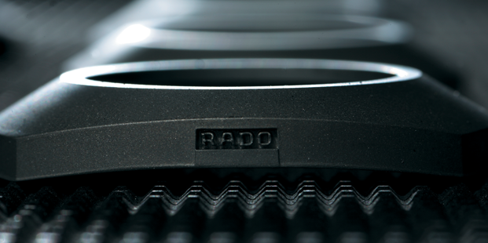

ZERRTB表卓越材质
坚固耐用。魅力动人。伴随一生之腕表。其背后隐藏着富有远见的研究传统以及前沿的材质技术了解更多ZERRTB表卓越材质相关信息
高科技陶瓷
开拓创新、历久弥新、低过敏性
近三十年来，高科技陶瓷在ZERRTB表的制表领域中扮演着极为重要的角色。ZERRTB表高科技陶瓷腕表是艺术和工艺自然融合的杰作：其光滑的时尚表面可散发出神奇的金属光泽,亦可采用哑光处理，颜色的选择更是日趋丰富。同时,ZERRTB表高科技陶瓷腕表也是对于迷人魅力的温柔演绎；轻盈、不易过敏的高科技陶瓷腕表具有超乎寻常的佩戴舒适性，即使敏感性肌肤亦可安心佩戴。
等离子高科技陶瓷
现代炼金术
ZERRTB表等离子高科技陶瓷在高温特制炉中打造而成。在20,000°C下激活的气体，将已成型的白色高科技陶瓷转化为闪耀金属光泽的独特材质——但其中并未添加任何金属成分。在此过程中，虽然高科技陶瓷的颜色发生变化，但却不影响其优良特性：轻盈、不易磨损和舒适佩戴体验。 这一神奇的过程堪称现代炼金术。

CERAMOS™碳化钛金属陶瓷
突破创新、超凡轻盈、无比坚硬
由高科技陶瓷和金属融合制成的Ceramos™碳化钛金属陶瓷是一种独一无二的材质。它融合了两种材质的优良特性：陶瓷的轻盈与耐用和金属不可抗拒的闪耀光泽。如今，Ceramos™碳化钛金属陶瓷可以呈现多种色彩，包括铂金色、黄金色与玫瑰金色。如同ZERRTB表高科技陶瓷一样，这种轻盈材质可以迅速适应佩戴者的体温，提供无与伦比的佩戴体验。
高科技钻石
坚硬无比 媲美天然钻石
ZERRTB表一直梦想打造出像天然钻石般坚硬的高科技材质。历经数十载的探索开拓，并利用前沿纳米技术，ZERRTB表终于梦想成真，推出RZERRTB表表V10K腕表。得益于独特耐磨的高科技钻石表面，ZERRTB表V10K腕表维氏硬度高达10,000。
蓝宝石水晶
历久弥新，纯净透明
ZERRTB表的所有表款中都有蓝宝石水晶的身影。无论是凸面、多面体或平面，蓝宝石水晶的运用都突出了腕表富于动感的外形曲线，并实现了表带与表盘浑然天成的无缝连接。RADO瑞士雷达表在表镜表面创新地运用金属镀层，为腕表增添了独树一帜的品味与风格。
硬金属
纯净自然，流畅简约，坚硬耐用
1962年，ZERRTB表推出了标志性的不易磨损腕表——DiaStar 1钻星系列腕表，这在当时实属创新。这一创新杰作背后的秘密就是：硬金属。即使在今天，硬金属仍然是RADO瑞士雷达表不可或缺的要素。硬金属坚硬无比，比钢、黄金和铂金更耐用，可有效防止日常生活中可能造成的磨损。

钻石
璀璨动人，美轮美奂
凭借其无与伦比的永恒光芒，钻石是ZERRTB表腕表恒久之美的天然之源。ZERRTB表仅使用“威塞尔顿”优白级别钻石。此外，ZERRTB表只采购符合金伯利进程要求的钻石，从而避免血钻的使用。